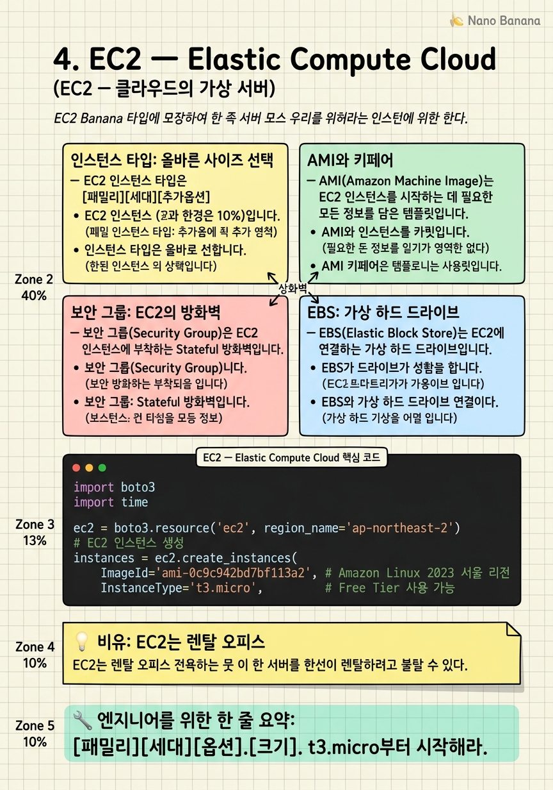

EC2 — Elastic Compute Cloud

🎯 학습 목표
- EC2 인스턴스를 생성하고 SSH로 접속할 수 있다
- 용도에 맞는 인스턴스 타입을 선택할 수 있다
- 보안 그룹으로 인바운드·아웃바운드 트래픽을 제어할 수 있다
- EBS 볼륨을 연결하고 파티션을 마운트할 수 있다
- AMI로 커스텀 이미지를 만들어 동일한 서버를 복제할 수 있다
EC2(Elastic Compute Cloud)는 가상 서버를 임대하는 AWS의 핵심 서비스입니다. 직접 서버를 구매하는 것과 달리 몇 분 내에 원하는 사양의 서버를 전 세계 어느 리전에든 즉시 띄울 수 있습니다. '탄력적(Elastic)'이라는 이름처럼 서버 수를 수요에 따라 유연하게 늘리고 줄일 수 있습니다.
EC2 인스턴스는 물리적 서버가 아니라 하이퍼바이저 위에서 실행되는 가상 머신(VM)입니다. AWS는 Nitro 하이퍼바이저를 사용하며, 물리 서버의 자원을 여러 고객에게 나눠 제공합니다.
EC2를 이해하는 핵심 개념 5가지: 1. AMI — 서버의 운영 체제와 소프트웨어 스냅샷 (어떤 OS로 시작할지) 2. Instance Type — CPU·메모리·네트워크 조합 (얼마나 강력한 서버를 쓸지) 3. Key Pair — SSH 접속용 공개키/비밀키 (서버에 어떻게 접근할지) 4. Security Group — 방화벽 규칙 (어떤 포트를 열지) 5. EBS — 서버에 붙이는 가상 하드 드라이브 (데이터를 어디에 저장할지)
핵심 내용
인스턴스 타입: 올바른 사이즈 선택
EC2 인스턴스 타입은 [패밀리][세대][추가옵션].[크기] 형식으로 표기됩니다. 예: m7i.xlarge는 범용(m) 7세대(7) Intel(i) xlarge 크기입니다.
| 패밀리 | 특징 | 예시 인스턴스 | 사용 사례 |
|---|---|---|---|
| m (General) | CPU·메모리 균형 | m7i.large | 웹 서버, 앱 서버 |
| c (Compute) | CPU 집약 | c7g.xlarge | 배치 처리, 게임 서버 |
| r (Memory) | 대용량 메모리 | r7i.2xlarge | 인메모리 DB, Hadoop |
| t (Burstable) | 평소엔 저전력, 필요 시 급상승 | t3.micro | 개발·테스트 서버 |
| p/g (GPU) | 그래픽 처리 장치 | p4d.24xlarge | ML 학습, 영상 렌더링 |
| i (Storage) | 빠른 로컬 NVMe | i4i.xlarge | 대용량 IO DB |
크기는 nano < micro < small < medium < large < xlarge < 2xlarge ... 순서입니다. 크기가 두 배씩 증가할 때마다 CPU와 메모리도 약 두 배씩 증가합니다.
Free Tier: t2.micro 또는 t3.micro는 신규 계정에서 월 750시간 무료입니다. 학습용으로 가장 먼저 사용해 보기에 적합합니다.
AMI와 키페어
AMI(Amazon Machine Image)는 EC2 인스턴스를 시작하는 데 필요한 모든 정보를 담은 템플릿입니다. 운영 체제(Amazon Linux 2023, Ubuntu 24.04, Windows Server 등), 설치된 소프트웨어, 기본 설정이 포함됩니다. AWS Marketplace에서 MySQL이나 WordPress가 미리 설치된 상용 AMI를 구매할 수도 있고, 직접 서버를 설정한 후 AMI로 만들어(스냅샷) 동일한 서버를 여러 개 복제할 수도 있습니다.
초보자에게 권장하는 AMI: - Amazon Linux 2023: AWS에 최적화된 CentOS 계열. AWS CLI가 기본 설치됨 - Ubuntu Server 24.04 LTS: 커뮤니티가 크고 자료가 많음 - Windows Server: GUI 환경 필요 시 (RDP로 접속)
Key Pair(키페어)는 EC2 인스턴스에 SSH로 접속하기 위한 공개키/비밀키 쌍입니다. AWS에서 키페어를 생성하면 .pem 파일(비밀키)이 다운로드되고, 공개키는 인스턴스에 자동으로 설치됩니다. .pem 파일은 한 번만 다운로드 가능하므로 안전하게 보관해야 합니다.
SSH 접속 명령어:
chmod 400 my-key.pem # 파일 권한 제한 (필수)
ssh -i my-key.pem ec2-user@{퍼블릭IP} # Amazon Linux
ssh -i my-key.pem ubuntu@{퍼블릭IP} # Ubuntu
보안 그룹: EC2의 방화벽
보안 그룹(Security Group)은 EC2 인스턴스에 부착하는 Stateful 방화벽입니다. 인바운드(들어오는 트래픽)와 아웃바운드(나가는 트래픽) 규칙을 별도로 설정합니다. '상태 저장(Stateful)'이라는 의미는 인바운드 허용 규칙으로 들어온 트래픽에 대한 응답은 자동으로 허용된다는 뜻입니다 (ACL과 달리).
일반적인 웹 서버 보안 그룹 규칙:
인바운드:
- Port 22 (SSH):
내 IP 주소/32만 허용 (절대0.0.0.0/0금지) - Port 80 (HTTP):
0.0.0.0/0(모든 인터넷) - Port 443 (HTTPS):
0.0.0.0/0
아웃바운드: 기본값은 모두 허용 (0.0.0.0/0)
보안 그룹의 중요한 특성: - 허용(Allow) 규칙만 추가 가능합니다. 특정 IP를 차단하는 Deny 규칙은 없습니다 (차단은 NACL에서) - 하나의 인스턴스에 여러 보안 그룹 부착 가능 - 보안 그룹을 소스로 지정 가능: 예를 들어 DB 보안 그룹에서 '웹 서버 보안 그룹으로부터의 3306 포트' 허용
베스트 프랙티스: SSH 포트(22)는 절대 0.0.0.0/0으로 열지 마세요. 전 세계 봇들이 수시로 스캔하고 있습니다. 내 IP 주소만 허용하거나, AWS Systems Manager Session Manager를 사용하세요.
EBS: 가상 하드 드라이브
EBS(Elastic Block Store)는 EC2에 연결하는 가상 하드 드라이브입니다. EC2 인스턴스와 독립적으로 존재하기 때문에 인스턴스를 종료해도 EBS의 데이터는 유지됩니다(삭제 옵션을 기본값 그대로 두면 루트 볼륨은 함께 삭제됩니다).
EBS 볼륨 타입:
| 타입 | 특징 | IOPS | 사용 사례 |
|---|---|---|---|
| gp3 (범용 SSD) | 기본 선택 | 최대 16,000 | 대부분의 워크로드 |
| io2 (프로비저닝 IOPS SSD) | 고성능 | 최대 256,000 | 대형 DB |
| st1 (처리량 최적화 HDD) | 대용량·저비용 | N/A | 데이터 웨어하우스 |
| sc1 (콜드 HDD) | 최저가 | N/A | 아카이브 |
EBS 스냅샷은 특정 시점의 EBS 볼륨 백업을 S3에 저장합니다. 스냅샷으로 AMI를 만들거나, 다른 AZ/Region으로 볼륨을 복사할 때 사용합니다.
인스턴스 스토어(Instance Store)는 EBS와 달리 물리 서버에 직접 붙어 있는 임시 스토리지입니다. 인스턴스를 중단(Stop)하거나 종료(Terminate)하면 데이터가 영구적으로 삭제됩니다. 대신 매우 빠릅니다. 영구 보관이 필요 없는 캐시 데이터에 적합합니다.
💡 비유로 이해하기
EC2를 가장 잘 설명하는 비유는 렌탈 오피스(공유 오피스)입니다. 직접 사무실을 구매하고 인테리어하는 대신, 필요한 크기의 사무실을 빌려 쓰는 것과 같습니다.
AMI는 오피스의 기본 인테리어입니다. '스탠다드 패키지(Amazon Linux)'를 선택하면 기본 책상·의자가 세팅된 채로 들어갑니다. 직접 커스텀한 인테리어를 스냅샷으로 찍어두면(Custom AMI) 동일한 사무실을 다른 층(다른 AZ)에 빠르게 복사할 수 있습니다.
인스턴스 타입은 사무실 크기입니다. 혼자 작업하면 1인실(t3.micro), 팀이 크면 대형 오피스(m7i.4xlarge)가 필요합니다. 보안 그룹은 사무실 출입 통제 시스템입니다. 어떤 키(포트)를 가진 사람만 들어올 수 있는지 설정합니다. EBS는 오피스 안의 파일 캐비닛입니다. 사무실을 옮겨도 캐비닛은 따라옵니다.
💻 코드 예시
boto3로 EC2 인스턴스를 프로그래밍 방식으로 생성하고 상태를 확인하는 방법입니다. 인프라를 코드로 관리하는 IaC(Infrastructure as Code)의 기초가 됩니다.
import boto3
import time
ec2 = boto3.resource('ec2', region_name='ap-northeast-2')
# EC2 인스턴스 생성
instances = ec2.create_instances(
ImageId='ami-0c9c942bd7bf113a2', # Amazon Linux 2023 서울 리전
InstanceType='t3.micro', # Free Tier 사용 가능
MinCount=1,
MaxCount=1,
KeyName='my-key-pair', # 사전에 생성된 키페어 이름
SecurityGroupIds=['sg-0123456789abcdef0'],
SubnetId='subnet-0123456789abcdef0', # Public Subnet
TagSpecifications=[{
'ResourceType': 'instance',
'Tags': [{'Key': 'Name', 'Value': 'my-web-server'}]
}]
)
instance = instances[0]
print(f"✅ 인스턴스 생성 중: {instance.id}")
# 인스턴스가 running 상태가 될 때까지 대기
instance.wait_until_running()
instance.reload() # 최신 상태 갱신
print(f"퍼블릭 IP: {instance.public_ip_address}")
print(f"SSH 접속: ssh -i my-key.pem ec2-user@{instance.public_ip_address}")
# 인스턴스 목록 조회
for i in ec2.instances.filter(Filters=[{'Name': 'tag:Name', 'Values': ['my-web-server']}]):
print(f" {i.id} | {i.state['Name']} | {i.instance_type}")ec2.create_instances()는 리스트를 반환합니다. MinCount=1, MaxCount=1로 하나만 생성합니다. wait_until_running()은 인스턴스가 running 상태가 될 때까지 폴링하는 편의 메서드입니다. instance.reload()를 호출해야 IP 주소 등 최신 속성을 가져올 수 있습니다.
🏭 현업에서의 평가
✅ 시니어가 보는 것
- 보안 그룹으로 불필요한 포트를 차단하는 최소 권한 접근 방식을 아는가
- 상황에 맞는 인스턴스 타입(비용 vs 성능)을 선택할 수 있는가
- AMI를 활용해 빠른 스케일아웃을 설계할 수 있는가
⚠️ 레드 플래그
- SSH를 0.0.0.0/0으로 열어두는 것을 당연하게 생각함
- 영구 데이터를 인스턴스 스토어에 저장함
- 단일 AZ에만 EC2를 배치해 가용성 문제를 무시함
🎤 예상 인터뷰 질문
- EC2 인스턴스가 갑자기 느려졌을 때 가장 먼저 어떤 지표(Metric)를 확인하겠습니까?
- On-Demand, Reserved, Spot 인스턴스를 각각 어떤 상황에서 선택하겠습니까?
- EC2의 Public IP를 재시작 후에도 유지하려면 어떻게 해야 합니까? (Elastic IP)
✨ 핵심 요약
인스턴스 타입 명명 규칙
[패밀리][세대][옵션].[크기]. t3.micro부터 시작해라.
AMI = 서버 스냅샷 템플릿
동일한 환경을 여러 서버에 복제할 때 커스텀 AMI를 사용한다.
키페어는 한 번만 다운로드
.pem 파일을 잃어버리면 SSH 접속이 불가능해진다.
보안 그룹은 Allow만
Deny 규칙이 없다. 차단은 NACL(Network ACL)에서.
SSH 포트는 내 IP만
22번 포트를 0.0.0.0/0으로 열면 봇 공격 대상이 된다.
EBS vs 인스턴스 스토어
영구 데이터는 EBS에. 인스턴스 스토어는 재시작 시 사라진다.
Elastic IP로 고정 IP
인스턴스를 재시작해도 IP가 바뀌지 않게 하려면 Elastic IP를 연결.
User Data로 부팅 자동화
시작 시 실행할 스크립트로 소프트웨어 설치를 자동화할 수 있다.